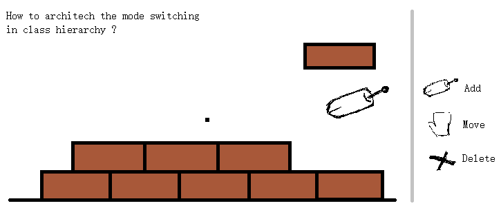
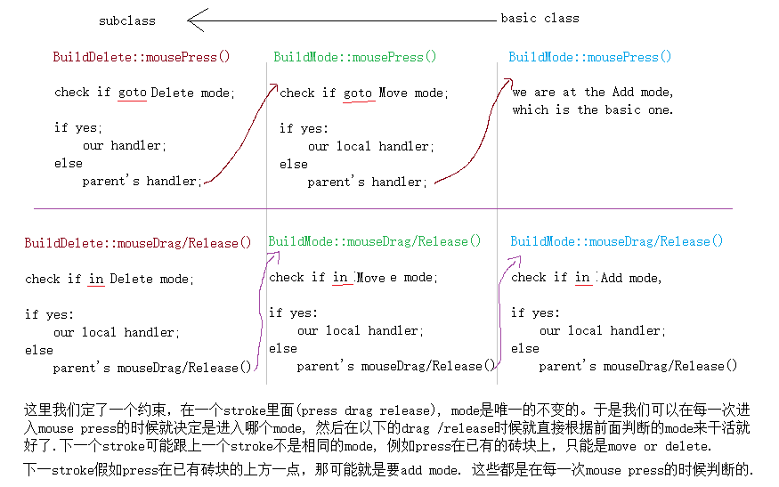

想象我们正在搞一个砌砖的程序, 是的, 码农只是其中一种称呼, 时不时也被称为搬砖的.
一开始, 我们只有不断在已有的基础上添加砖头的功能。
后来, 我们需要有移动某些砖块的功能。例如在最外表面的砖块都可以被移动。
再后来，我们需要敲掉某砖块的功能。
它们分别对应于add, move, delete这三种modes.
其中一种设计方法是
class Build
{
enum BuildMode {
Add,
Move,
Delete
};
BuildMode m_currentMode;
};
这方法是把所有mode的实现都放在同一个地方, 每次更新都要改这个地方Build的源代码实现. 但是假如在添加move, delete这新mode的时候, 我们不想or不能改已有的只有add mode的Build源码呢?
这是另一种设计方案
class Build
{
// care about the add mode only.
};
class BuildMove : public Build
{
bool onMouseEvent()
{
check if we will go into the Move mode;
if yes, then we handle the move mode here;
if no, pass to the parent class Build's onMouseEvent() which handle the add mode;
}
};
class BuildDelete : public BuildMode
{
bool onMouseEvent()
{
check if we will go into the Delete mode;
if yes, then we handle the delete mode here;
if no, pass to the parent class Build's onMouseEvent() which handle the add and move mode;
}
};

每一层的class只要管好自己就ok了, 自己应付不了or不要自己应付的就pass给上层. 既能继承了上层的功能, 又能不破坏这些已有功能的基础上添加新功能. 利用了class inherit的概念.